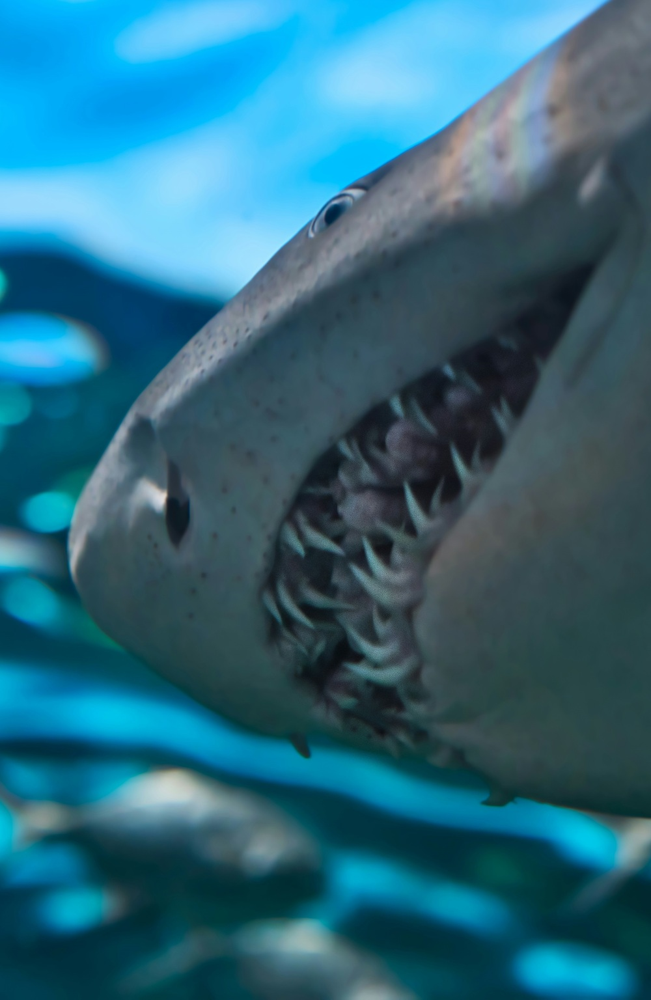

LETS'S GET START
Welcome to the fascinating world of sharks! Here, you will discover everything about these incredible marine predators, from their most well-known species to the deepest secrets of the ocean. Get ready for an exciting and educational journey, exploring the importance of sharks to the ecosystem and the curiosities that make these animals so unique.
SPECIES

With an impressive variety, there are over 500 different species of sharks spread across the world's oceans. These species vary widely in size, shape, and behavior. From the iconic Great White Shark, known for its power and fame on movie screens, to the enigmatic Nurse Shark, which hides in the depths. Each species possesses unique adaptations that make them fascinating and successful in their respective habitats. In our guide, you'll discover where they live, their preferred diets, how they hunt, and the peculiar characteristics that make these marine predators true wonders of nature.
ExploreANATOMY AND BIOLOGY
Sharks are marvels of marine biology. These fish possess streamlined bodies perfect for swimming, with cartilaginous skeletons that are lighter than bone. Their skin is covered in tiny, tooth-like structures called dermal denticles, reducing drag and increasing speed. Sharks have keen senses, including exceptional smell and the ability to detect electromagnetic fields produced by other animals. Their teeth are continuously replaced, ensuring they always have sharp tools for hunting. Many species can also detect the faintest vibrations in the water, making them effective predators. All in all, sharks are perfectly adapted to their roles as apex predators in the ocean.
CONSERVATION AND THREATS
Sharks play a vital role in marine ecosystems but face serious threats due to overfishing, habitat degradation, pollution, and climate change. The practice of finning is especially cruel. Global initiatives work to protect sharks through marine protected areas, sustainable fishing regulations, and public awareness campaigns. Supporting these efforts and educating others about the importance of sharks is crucial for their preservation. Together, we can ensure they continue to thrive in our oceans.
Here are some websites to learn more about:


COOL FACTS
Sharks are surrounded by fascinating myths and facts. Despite their dangerous reputation, most species are harmless to humans. They have existed for over 400 million years, making them older than dinosaurs.
Fun Fact: Sharks have existed for over 400 million years, making them older than dinosaurs! They have survived multiple mass extinctions, continuously adapting to environmental changes.
Myth: "Sharks need to be constantly moving to survive." In fact, some species can breathe while stationary.
Fact: Sharks have an extraordinary sense of smell, capable of detecting a drop of blood in an Olympic-sized pool.
Debunking these myths and learning these facts make sharks even more incredible and worthy of protection.